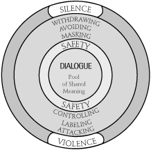
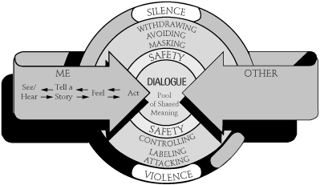
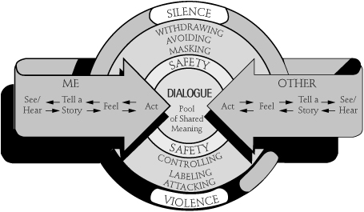
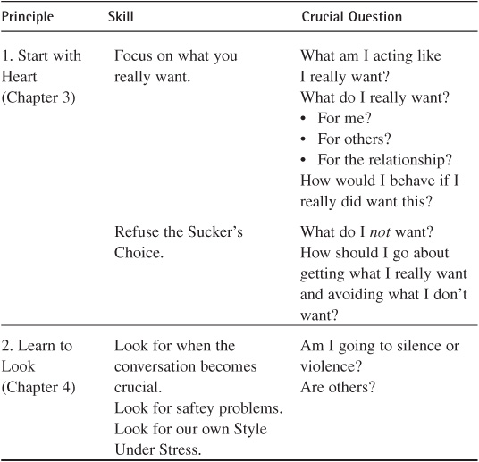
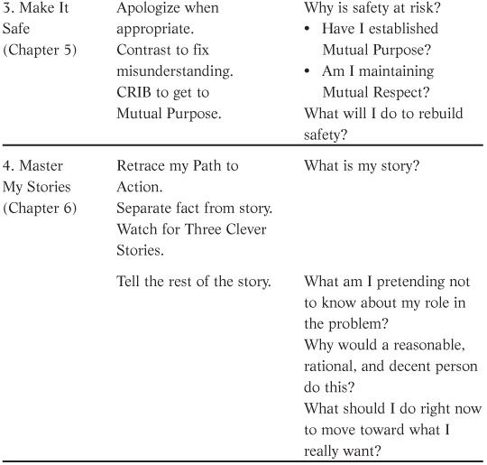
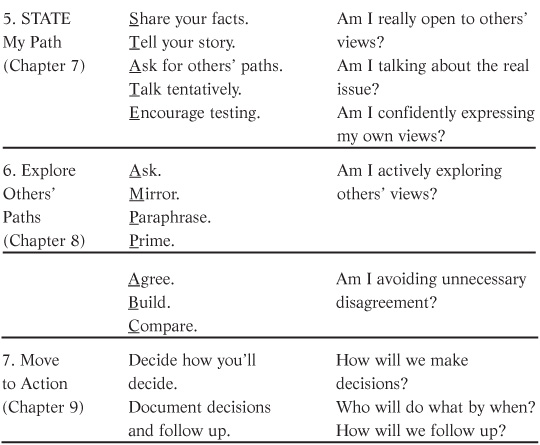

Communication works for those who work at it.
—JOHN POWELL
If you read the previous pages in a short period of time, you probably feel like an anaconda who just swallowed a warthog. It’s a lot to digest.
You may well be wondering at this point how you can possibly keep all these ideas straight—especially during something as unpredictable and fast moving as a crucial conversation.
This chapter will help with the daunting task of making dialogue tools and skills memorable and useable. First, we’ll simplify things by sharing what we’ve heard from people who have changed their lives by using these skills. Second, we’ll lay out a model that can help you visually organize the seven dialogue principles. Third, we’ll walk through an example of a crucial conversation where all the dialogue principles are applied.
Over the years, people often tell us that the principles and skills contained in this book have helped them a great deal. But how? In what way can the printed word lead to important changes?
After watching people at home and at work, as well as interviewing them, we’ve learned that most people make progress not by focusing on specific skills—at least to start with—but instead by applying two of the main principles in this book. We hope that as we share their success strategies with you, you’ll feel more confident getting started on the road to improved results and relationships.
Learn to Look. The first lever for positive change is Learn to Look. That is, people who improve their dialogue skills continually ask themselves whether they’re in or out of dialogue. This alone makes a huge difference. Even people who can’t remember or never learned the skills of STATE or CRIB, etc., are able to benefit from this material by simply asking if they’re falling into silence or violence. They may not know exactly how to fix the specific problem they’re facing, but they do know that if they’re not in dialogue, it can’t be good. And then they try something to get back to dialogue. As it turns out, trying something is better than doing nothing.
So remember to ask the following important question: “Are we playing games or are we in dialogue?” It’s a wonderful start.
Many people get additional help in learning to look from their friends. They go through training as families or teams. As they share concepts and ideas, they learn a common vocabulary. This shared way of talking about crucial conversations helps people change.
Perhaps the most common way that the language of dialogue finds itself into everyday conversation is with the expression, “I think we’ve moved away from dialogue.” This simple reminder helps people catch themselves early on, before the damage is severe. As we’ve watched executive teams, work groups, and couples simply go public with the fact that they’re starting to move toward silence or violence, others often recognize the problem and take corrective action. “You’re right. I’m not telling you what needs to be said,” or “I’m sorry. I have been trying to force my ideas on you.”
Make It Safe. The second lever is Make It Safe. We’ve suggested that dialogue consists of the free flow of meaning and that the number one flow stopper is a lack of safety. When you notice that you and others have moved away from dialogue, do something to make it safer. Anything. We’ve suggested a few skills, but those are merely a handful of common practices. They’re not immutable principles. To no one’s surprise, there many things you can do to increase safety. If you simply realize that your challenge is to make it safer, nine out of ten times you’ll intuitively do something that helps.
Sometimes you’ll build safety by asking a question and showing interest in others’ views. Sometimes an appropriate touch (with loved ones and family members—not at work where touching can equate with harassment) can communicate safety. Apologies, smiles, even a request for a brief “time out” can help restore safety when things get dicey. The main idea is to make it safe. Do something to make others comfortable. And remember, virtually every skill we’ve covered in this book, from Contrasting to CRIB, offers a tool for building safety.
These two levers form the basis for recognizing, building, and maintaining dialogue. When the concept of dialogue is introduced, these are the ideas most people can readily take in and apply to crucial conversations. Now let’s move on to a discussion of the rest of the principles we’ve covered.
To help organize our thinking and to make it easier to recall the principles (and when to apply them), let’s look at the model shown in Figure 10-1. It begins with concentric circles—like a target. Notice that the center circle is the Pool of Shared Meaning—it’s the center of the target, or the aim of dialogue. When meaning flows freely, it finds its way into this pool, which represents people’s best collective thinking.
Surrounding the Pool of Shared Meaning is safety. Safety allows us to share meaning and keeps us from moving into silence or violence. When conversations become crucial, safety must be strong.
Watch for games. Next you’ll notice that we’ve portrayed the behaviors to watch when thinking about safety. These are the six silence and violence behaviors we look for in others and in out-

Figure 10-1. The Dialogue Model
Figure 10-2. The Dialogue Model
breaks of our own Style Under Stress. When we see these or similar behaviors, we know that safety is weak. This is a cue to step out of the content of the conversation, strengthen safety, and then step back in. Remember, don’t back away or weaken the argument. Just rebuild safety. Do it quickly. The further you move from dialogue into silence or violence, the harder it is to get back and the greater the costs.
Now, let’s add people to our model.
Me and Others. (Figure 10-2). You are the “ME” arrow on the model. Others are included in the “OTHER” arrow. The arrows (both pointed to the center of the pool) show that both we and others are in dialogue. All our meaning is flowing freely into the shared pool. Learn to Look means we watch for when either of these two arrows begins to point upward or downward, toward silence or violence. When this happens, either you or others are starting to play games.
Watching and building conditions. (Figure 10-3). When you see yourself drifting to silence or violence, Start with Heart. Keep

Figure 10-3. The Dialogue Model
yourself in dialogue by focusing on what you really want and then behaving as if you really do want it. Avoid the Sucker’s Choices that make it appear as if silence and violence are the only options.
When your emotions start running strong and taking control of the conversation, use the Master My Stories principle to bring your arrow back to the Pool of Shared Meaning. Retrace your Path to Action, watch for clever stories, and tell the rest of the story.
When others move to silence or violence, Make It Safe. As we strengthen safety, others are more likely to lay aside their silence and violence and move back toward dialogue in the center.
What to do. The next three principles teach us what to do with our meaning. First, we learned to STATE My Path. We share our own sensitive or controversial views by following our Path to Action. We share the facts first and then tentatively share our story. We then demonstrate we’re serious about dialogue by encouraging others to share their story (Figure 10-4)—especially if it’s different from our own.

Figure 10-4. The Dialogue Model
To help others share their meaning, we Explore Others’ Paths. We ask, mirror, paraphrase, and prime (AMPP) as needed to get to their feelings, stories, and facts. As we use these skills effectively, we demonstrate that their concerns are discussable—that dialogue can actually work. This helps others feel safer surrendering their silence and violence and joining us in dialogue.
Finally, with the Pool of Shared Meaning full, we Move to Action. We ensure that we are clear about how decisions are being made and about what the decisions are. And we follow up to ensure that dialogue leads to positive actions and results.
You can use the Dialogue Model first to diagnose what’s going on. Remember to ask: “Where am I?” “Where are others?” “Are we in dialogue or in some form of silence or violence?”
Next ask, “Where do I want to be?” “Where do I want others to be?” The principles and tools become the methods and means to get to dialogue.
Here’s one last tool to help you organize what we’ve shared about mastering crucial conversations. This tool will help you prepare for an upcoming crucial conversation or learn from one that you’ve already held.
Take a look at the table entitled Coaching for Crucial Conversations, which follows. The first column in the table lists the seven dialogue principles we’ve shared. The second column summarizes the skills associated with each principle. The final column is the best place to start coaching yourself or others. This column includes a list of questions that will help you apply specific skills to your conversations.
Coaching for Crucial Conversations



We’ve included an extended case here to show how these principles might look when you find yourself in the middle of a crucial conversation. It outlines a tough discussion between you and your sister about dividing your mother’s estate. The case is set up to illustrate where the principles apply, and to briefly review each principle as it comes up in the conversation.
The conversation begins with you bringing up the family summerhouse. Your mother’s funeral was a month ago, and now it’s time to split up both money and keepsakes. You’re not really looking forward to it.
The issue is made touchier by the fact that you feel that since you almost single-handedly cared for your mother during the last several years, you should be compensated. You don’t think your sister will see things the same way.
Your Crucial Conversation
YOU: We have to sell the summer cottage. We never use it, and we need the cash to pay for my expenses from taking care of Mom the past four years.
SISTER: Please don’t start with the guilt. I sent you money every month to help take care of Mom. If I didn’t have to travel for my jobs, you know I would have wanted her at my house.
You notice that emotions are already getting strong. You’re getting defensive, and your sister seems to be angry. You’re in a crucial conversation, and it’s not going well.
Start with Heart
Ask yourself what you really want. You want to be compensated fairly for the extra time and money you put in that your sister didn’t. You also want to keep a good relationship with your sister. But you want to avoid making a Sucker’s Choice. So you ask yourself: “How can I tell her that I want to be compensated fairly for the extra effort and expense I put in and keep a good relationship?”
Learn to Look
You recognize a lack of Mutual Purpose—you’re both trying to defend your actions rather than discuss the estate.
Make It Safe
Contrast to help your sister understand your purpose.
YOU: I don’t want to start an argument or try to make you feel guilty. But I do want to talk about being compensated for shouldering most of the responsibility over the last few years. I love Mom, but it put quite a strain on me financially and emotionally.
SISTER: What makes you think you did so much more than I did?
You’re telling yourself that you deserve more because you did more to care for your mother and covered unplanned expenses. Retrace your Path to Action to find out what facts are behind the story you’re telling that’s making you angry.
STATE My Path
You need to share your facts and conclusions with your sister in a way that will make her feel safe telling her story.
YOU: It’s just that I spent a lot of money taking care of Mom and did a lot of work caring for her instead of bringing in a nurse. I know you cared about Mom too, but I honestly feel like I did more in the day-to-day caregiving than you did, and it only seems fair to use some of what she left us to repay a part of what I spent. Do you see it differently? I’d really like to hear.
SISTER: Okay, fine. Why don’t you just send me a bill.
It sounds as though your sister isn’t really okay with this arrangement. You can tell her voice is tense and her tone is one of giving in, not of true agreement.
Explore Others’ Paths
Since part of your objective is to maintain a good relationship with your sister, it’s important that she add her meaning to the pool. Use the AMPP skills to actively explore her views.
YOU: The way you say that makes it sound like maybe that suggestion isn’t okay with you. [Mirror] Is there something I’m missing? [Ask]
SISTER: No—if you feel like you deserve more than I do, you’re probably right.
YOU: Do you think I’m being unfair? That I’m not acknowledging your contributions? [Prime]
SISTER: It’s just that I know I wasn’t around much in the last couple of years. I’ve had to travel a lot for work. But I still visited whenever I could, and I sent money every month to help contribute to Mom’s care. I offered to help pay to bring in a nurse if you thought it was necessary. I didn’t know you felt you had an unfair share of the responsibility, and it seems like your asking for more money is coming out of nowhere.
YOU: So you feel like you were doing everything you could to help out and are surprised that I feel like I should be compensated? [Paraphrase]
SISTER: Well, yes.
Explore Others’ Paths
You understand your sister’s story now and still disagree to a point. Use the ABC skills to explain how your view differs. You agree in part with how your sister sees things. Use building to emphasize what you agree with and to bring up what you differ on.
YOU: You’re right. You did a lot to help out, and I realize that it was expensive to visit as often as you did. I opted not to pay for professional home health care because Mom was more comfortable with me taking care of her, and I didn’t mind that. On top of that, there were some incidental expenses it doesn’t sound like you were aware of. The new medication she was on during the last eighteen months was twice as expensive as the old, and the insurance only covered a percentage of her hospital stays. It adds up.
SISTER: So it’s these expenses you’re worried about covering? Could we go over these expenses to decide how to cover them?
Move to Action
You want to create a definite plan for being reimbursed for these expenses, and you want it to be one you both agree on. Come to a consensus about what will happen, and document who does what by when, and settle on a way to follow up.
YOU: I’ve kept a record of all the expenses that went over the amount that both of us agreed to contribute. Can we sit down tomorrow to go over those and talk about what’s fair to reimburse me for?
SISTER: Okay. We’ll talk about the estate and write up a plan for how to divide things up.
If we first learn to recognize when safety is at risk and a conversation becomes crucial (Learn to Look) and that we need to take steps to Make It Safe for everyone to contribute his or her meaning, we can begin to see where to apply the skills we’ve learned. A visual model can also help us see where the principles and skills are needed.
Using these tools and reminders will get us started in mastering the skills that help us improve our crucial conversations.
Cue Yourself with the Crucial Conversations Model |
Go online today to download your own copy of the Crucial Conversations model. This visual reminder will help you remember your newly learned skills. |